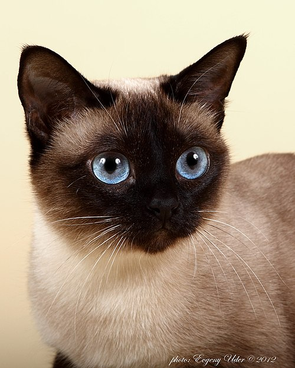

Siamese cat
The Siamese cat (Thai: แมวไทย, Maeo Thai; แมวสยาม, Maeo Sayam; แมววิเชียรมาศ, Maeo Wichien Maat) is one of the first distinctly recognised breeds of Asian cat. It derives from the Wichianmat landrace. The Siamese cat is one of several varieties of cats native to Thailand (known as Siam before 1939). The original Siamese became one of the most popular breeds in Europe and North America in the 19th century.Siamese cats have a distinctive colourpoint coat, resulting from a temperature-sensitive type of albinism.
Distinct features like blue almond-shaped eyes, a triangular head shape, large ears, an elongated, slender, and muscular body, and various forms of point colouration characterise the modern-style Siamese. The modern-style Siamese's point-colouration resembles the "old-style" foundation stock. The "old-style" Siamese have a round head and body. They have been re-established by multiple registries as the Thai cat. Siamese and Thai cats are selectively bred and pedigreed in multiple cat fancier and breeder organisations. The terms "Siamese" or "Thai" are used for cats from this specific breed, which are by definition all purebred cats with a known and formally registered ancestry. The ancestry registration is the cat's pedigree or "paperwork".
The Siamese is a part of the foundation stock for crossbreeding with other cats. The crossbreeding resulted in many different types of cats, like the Oriental Shorthair and Colourpoint Shorthair. The Oriental Shorthair and Colourpoint Shorthair were developed to expand the range of coat patterns. The breeding of the Oriental and Colourpoint Shorthairs resulted in a long-haired variant called the Himalayan. The long-haired Siamese is recognised internationally as a Balinese cat. The breeding also created the hair-mutation breeds, including the Cornish Rex, Sphynx, Peterbald, and blue-point Siamese cat.

Thank you!!!
go back>>>